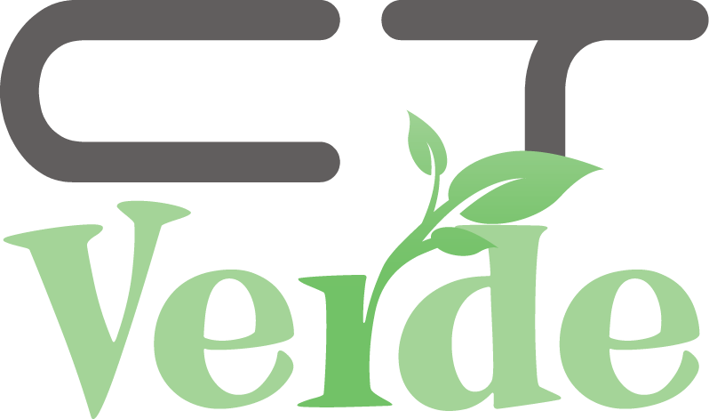

🌳
Levantamento de Árvores
Monitoramento contínuo das árvores do CT para avaliar a saúde botânica, prevenir queda e planejar podas ecológicas e reposição vegetal.
ProgramasAmbientaisCT

Criado em 2010 · Biodiversidade e Convivência
Conservação, manutenção e ampliação de áreas verdes e espaços de convivência do CT.
Cards com imagem, resumo e acesso à página completa de cada tema.
O CT Verde é um programa ambiental criado em 2010 pelos Programas Ambientais do Centro de Tecnologia da UFRJ, com o objetivo de promover o gerenciamento, conservação e ampliação das áreas verdes e espaços de convivência do CT.
O programa atua por meio de projetos de preservação ambiental, educação ambiental, monitoramento da fauna e flora, melhoria dos espaços verdes e conscientização da comunidade acadêmica.
O CT Verde é coordenado por uma comissão formada por:
A comissão realiza reuniões mensais para planejar e executar projetos ambientais em parceria com as Unidades do CT, a Prefeitura Universitária, o EPlan/CT, o Projeto MUDA e a Decania do Centro de Tecnologia.
O CT Verde possui uma história de constante adaptação e esforço acadêmico para transformar a realidade ambiental do Centro de Tecnologia da UFRJ.
Criação oficial do programa CT Verde através da Portaria Decania nº 47/2010.
Suspensão temporária devido a reestruturações operacionais.
Retomada oficial das atividades e planejamento de novas frentes de ação.
Mais de 26 reuniões realizadas para consolidação de campanhas permanentes.
Consolidação do Jardim da Triagem, sensores inteligentes e painéis em tempo real.
Conheça nossas frentes de preservação, educação e proteção animal no campus.
Monitoramento contínuo das árvores do CT para avaliar a saúde botânica, prevenir queda e planejar podas ecológicas e reposição vegetal.
Ações de conscientização contra o abandono de cães e gatos. Promoção da posse responsável e divulgação de cartilhas de adoção.
Os gambás são marsupiais protegidos por lei. Eles ajudam a controlar insetos e escorpiões e não transmitem febre amarela.
Ações coordenadas para impedir a proliferação do mosquito transmissor de Dengue, Zika e Chikungunya no campus.
Não deixar recipientes acumulando água da chuva no campus.
Garantir o fechamento hermético dos reservatórios dos prédios.
Evitar o entupimento de calhas e ralos pluviais do CT.
Eliminar garrafas e copos plásticos descartados nas matas.
Muitas pessoas culpam os macacos equivocadamente. Clique nos cartões abaixo para virá-los e revelar o Mito e a Verdade.
"Os macacos transmitem febre amarela diretamente para os humanos."
Clique para virar e ver a verdade.
A transmissão ocorre através de vetores. O vírus é transmitido apenas pela picada de mosquitos infectados (como Haemagogus e Sabethes). O macaco é uma vítima da doença e atua como sentinela de alerta para biólogos e médicos.
"A presença de macacos no campus representa um perigo de contaminação."
Clique para virar e ver a verdade.
Os macacos ajudam a nos proteger. Quando um macaco adoece, o sistema de vigilância epidemiológica entra em ação imediatamente, vacinando a população local e mapeando a proliferação dos mosquitos. Protegê-los é salvar vidas humanas!
Um projeto inovador de requalificação urbana entre os blocos C e D do campus do Centro de Tecnologia. Utiliza conceitos de agrofloresta para recuperar o solo degradado, aumentar a biodiversidade, plantar espécies alimentícias e atenuar a temperatura local (redução das ilhas de calor).
Transformação de resíduos orgânicos coletados nos restaurantes universitários em adubo de alta qualidade.
A requalificação da área verde no entorno do Centro de Triagem do ReciclaCT.
Reaproveitamos pallets, engradados de madeira e tábuas descartadas encontrados no CT. Em vez de virarem lixo, esses materiais são recuperados pelos extensionistas e transformados em cercas ecológicas, delimitação de canteiros e bancos de convivência.
Excelente oportunidade de aprendizado prático em três grandes competências:
Acúmulo de entulhos e capim sem manejo.
Construção dos cercados ecológicos e plantio.
Canteiros floridos, espécies nativas e área agradável.
Aproveitando a área recuperada da triagem, criamos um pequeno viveiro permanente para a produção de mudas ornamentais, temperos e mudas de árvores nativas para reposição arbórea no CT e em eventos da UFRJ.
Sensores em tempo real, quiz ecológico e inventário digital da biodiversidade do campus.
Temperatura do Campus
--°C
Sensor Decania CT (Ilha de Calor)
Umidade do Ar
--%
Estação EPlan/CT
Estabilidade CO₂
-- ppm
Estimativa de carbono absorvido
Navegue pelas principais espécies de fauna e flora que habitam o Centro de Tecnologia.
Teste seus conhecimentos sobre biodiversidade e convivência consciente no campus.
Carregando pergunta...
Faça o download gratuito de materiais preparados pelos extensionistas.
Ações de combate ao abandono de cães e gatos e cuidados essenciais no CT.
Baixar PDF